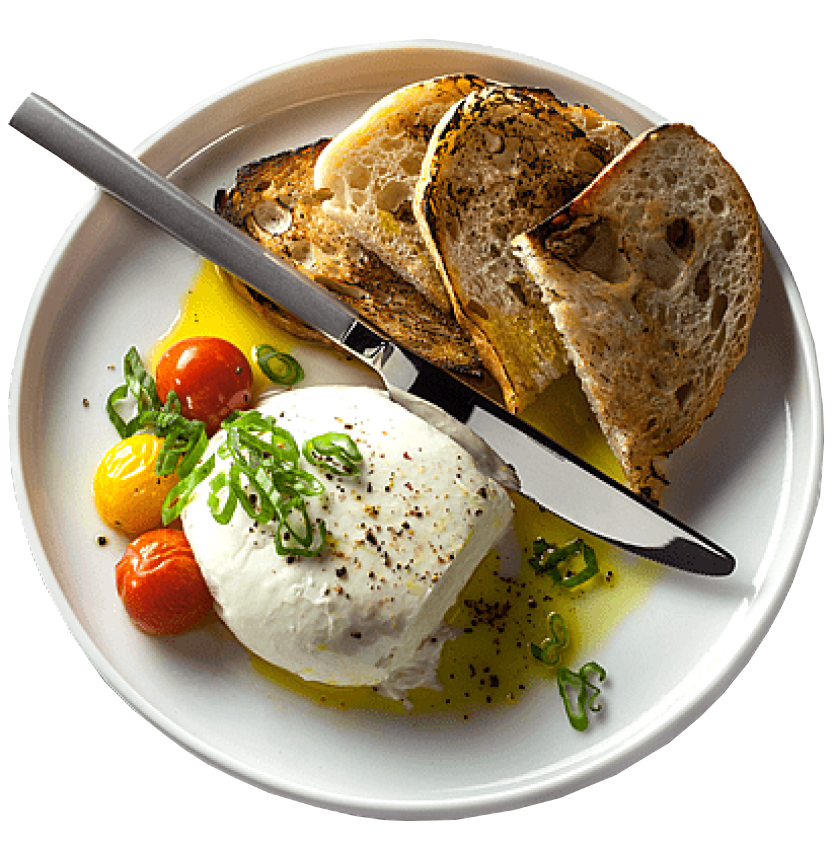
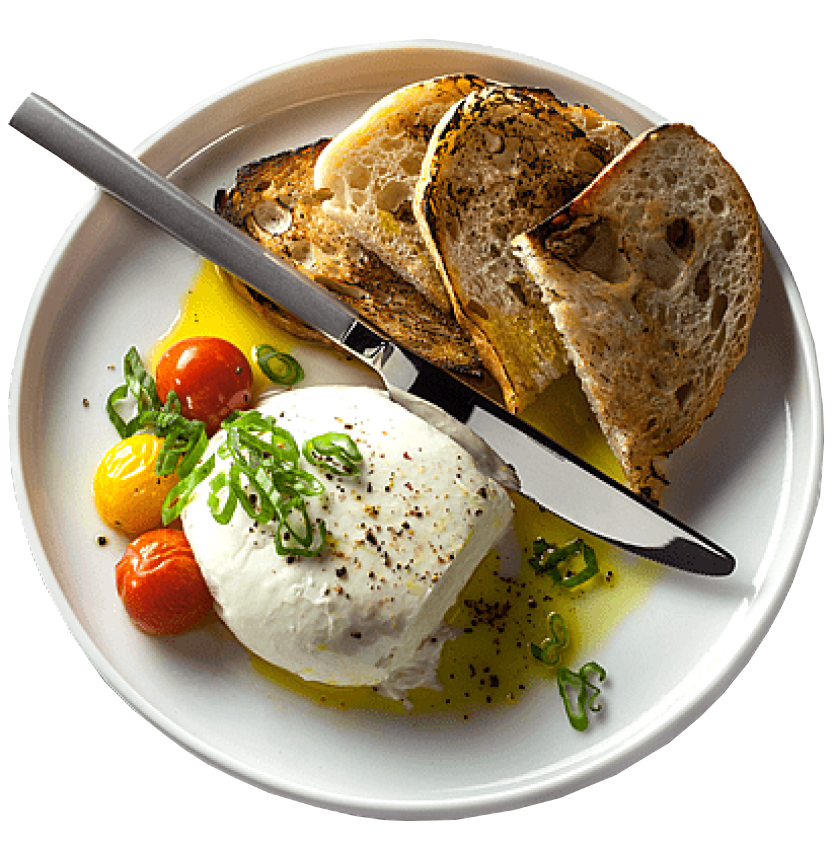

About us
Bienvenue sur notre site web de food ! Nous sommes une équipe passionnée par la nourriture et la cuisine, et nous sommes ravis de partager notre amour de la bonne cuisine avec vous. Notre mission est de vous offrir des recettes délicieuses
et inspirantes qui vous permettront de découvrir de nouvelles saveurs et de nouveaux plats. Nous croyons que la nourriture doit être savoureuse, saine et nourrissante, et nous travaillons dur pour créer des recettes qui répondent à ces
critères. Notre équipe de chefs et de nutritionnistes travaille ensemble pour élaborer des recettes qui sont non seulement délicieuses, mais aussi bonnes pour vous. Nous sommes convaincus que la nourriture peut être à la fois saine et
savoureuse, et nous cherchons à prouver cette théorie à travers nos recettes. Nous sommes également engagés à utiliser des ingrédients frais et de qualité dans nos recettes. Nous croyons que la qualité des ingrédients est la clé pour obtenir
des plats savoureux et sains, et nous prenons donc soin de sélectionner les meilleurs ingrédients pour nos recettes.


 

.jpeg) Petit Dejuener :
Petit Dejuener :
.jpeg) Dejuener :
Dejuener :